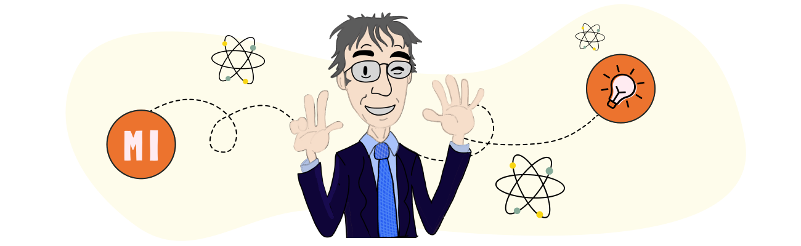

Teachers must be encouraged - I almost said 'freed', to pursue an education that strives for depth of understanding.
Howard Gardner
But once we realise that people have very different kinds of minds, different kinds of strengths; some people are good in thinking spatially, some in thinking language, others are very logical, other people need to be hands on and explore actively and try things out, then education, which treats everybody the same way, is actually the most unfair education.
Howard Gardner